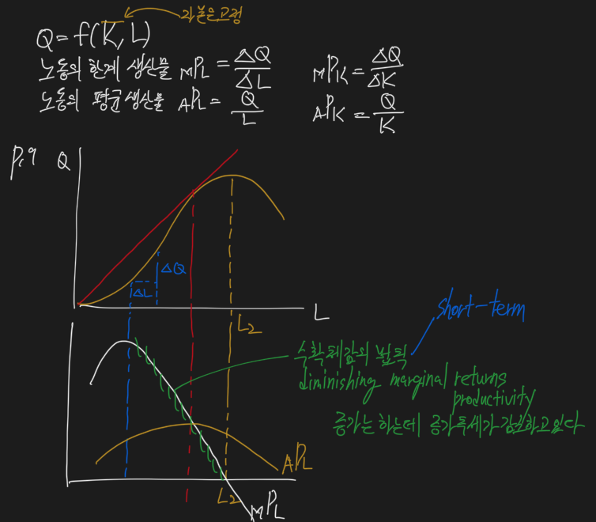

Economics



Market structure

- Perfect competition refers to a market in which many firms produce identical (homogeneous) products, barriers to entry into the market are very low, and firms compete for sales only on the basis of price. Firms face perfectly elastic (horizontal ) demand curves at the price determined in the market because no firm is large enough to affect the market price.
- Monopolistic competition
- Each firm differentiates its products from those of other firms through some combination of differences in product quality, product features, and marketing.
- The demand curve faced by each firm is downward sloping; while demand is elastic, it is not perfectly elastic.
- barriers to entry are low. (easy entry)
- Oligopoly market is that there are only a few firms competing.
- firms are interdependent
- barriers to entry are high
- A monopoly market is characterized by a single seller of a product with no close substitutes.
- High barriers to entry protect a monopoly producer from competition.
Profit maximization condition


Perfect competition
- Profits are maximized by producing the quantity for which marginal cost equals marginal revenue.
- Note that marginal revenue and price are equal so price also equals marginal cost at the profit-maximizing quantity.
Profit Maximization

- 완전 경쟁시장에서는 Aggregate Revenue = Marginal Revenue
- Marginal Cost와 Marginal Revenue가 만나는 점에서 Quantity가 결정 됨
- Price taker 시장이기 때문에 가격 결정권이 없음
- 자신의 cost에 따라 quantity가 결정됨
- 이윤구조는 기업의 Average Total Cost에 따라 결정됨
Profit

- Profit = Total Revenue - Total Cost
- Cost에는 explicit cost와 implicit cost의 합
- Implicit cost에는 opportunity cost가 포함 됨
Shutdown point & Breakeven point

- MC와 Price 선이 만나는 곳이 Average Variable Costs의 최저값일 경우 shut down point라고 함
- 이보다 가격이 떨어지면 shut down, 오르면 continue business
- MC와 Price가 만나는 곳이 AVT의 최저값일 경우 breakeven point라고 함
- breakeven point보다 가격이 오르면 이익 발생
Market structure
- The short-run supply function for a firm under perfect competition is its marginal cost curve above its average variable cost curve.
- The short-run market supply curve is constructed simply by summing the quantities supplied at each price across all firms in the market.
- In markets characterized as monopolistic competition, oligopoly, and monopoly, there is no well-defined supply function.
- This is because under all three of these market structures, firms face downward-sloping demand curves.
- In each case, the quantity supplied is determined by the intersection of marginal cost and marginal revenue, and the price charged is then determined by the demand curve the firm faces.
Perfect competition market

- 완전경쟁시장에서는 price = MC
- p = ATC인 경우 이익은 0
- ATC = MC인 경우 최소효율규모라고 부름
- MC = MR인 경우 이윤극대화조건이라고 부름
Permanent Change
- 장기적인 변화를 의미

- 장기적으로는 잠시 Quantity나 Supply의 증감으로 인해 가격변동이 있더라도 다시 균형가격으로 돌아옴
- A permanent change in demand leads to the entry of firms to, or exit of firms from, and industry.
Monopolistic Competition
- A large number of independent sellers
- Each firm has a relatively small market share, so no individual firm has any significant power over price.
- Firms need only pay attention to average market price, not the price of individual competitors.
- There are too many firms in the industry for collusion (price fixing) to be possible.
- Differentiated products
- Each producer has a product that is slightly different from its competitors.
- The competing products are close substitutes for one another.
- Firms compete on price, quality, and marketing as a result of product differentiation.
- Low barriers to entry so that firms are free to enter and exit the market.

- 독점적 경쟁시장은 Demand 선이 기울기가 마이너스
- MC와 D가 만나는 곳에서 가격이 결정되며, 가격과 ATC의 차이만큼 이윤 발생
- MR = MC 선에서 quantity 최대

- Monopolistic market에서는 어느정도 잉여설비가 발생함
- 하지만 perfect competition market이든, monopolistic market이든 장기적으로는 economic profit이 0에 수렴함
- Product innovation is a necessary activity as firms in monopolistic competition pursue economic profits.
- Advertising expenses are high for firms in monopolistic competition.
- advertising costs increase the average total cost curve for a firm in monopolistic competition.
- Brand names provide information to consumers by providing them with signals about the quality of the branded products.
- Profits are maximized when a firm produces the quantity for which revenue equals marginal costs.
- Similar to a monopoly structure, the firm faces a downward sloping demand curve and price will be greater than marginal cost and marginal revenue.
Oligopoly
- 과점 시장
- An oligopoly market has higher barriers to entry and fewer firms.
- The other key difference is that the firms are interdependent, so a price change by one firm can be expected to be met by a price change by its competitors.
- In general, collusive agreements to increase price in an oligopoly market will be more successful (have less cheating) when:
- There are fewer firms.
- Products are more similar (less differentiated).
- Cost structure are more similar.
- Purchases are relatively small and frequent.
- Retaliation by other firms for cheating is more certain and more severe.
- There is less actual or potential competition from firms outside the cartel.

- 과점시장은 수요와 공급을 설명하는 모델이 4가지 제시됨
Kinked demand curve model
- One traditional model of oligopoly, the kinked demand curve model, is based on the assumption that an increase in a firm’s product price will not be followed by its competitors, but a decrease in price will.
- 굴절수요곡선 모델
- 2개의 수요곡선이 존재하는데, A기업의 가격변동에 B기업이 어떻게 반응하느냐에 따라서 수요곡선이 달라짐
- 가정 - B기업이 A기업의 가격인하에만 동조한다면
- 굴절된 수요곡선이 그려짐
- 가격을 인상한다면 수요가 가격에 탄력적이라 급격하게 quantity가 줄어듬
- 가격을 하락한다면 수요가 가격에 비탄력적이라 quantity에 변동이 적음
Cournot duopoly model
- 2개의 회사만 존재하는 시장
- An early model of oligopoly pricing decisions is the Cournot model.
- In Cournot’s model, two firms with identical marginal cost curves each choose their preferred selling price based on the price the other firm chose in the previous period.
- The equilibrium for an oligopoly with two firms (duopoly), in the Cournot model, is for both firms to sell the same amounts and same quantities, splitting the market equally at the equilibrium price.
- Firms determine their quantities simultaneously each period and, under the assumptions of the Cournot model, these quantities will change each period until they are equal.
Nash equilibrium model (prisoner’s dilemma)
- 내쉬균형모델
- 우월전략균형 (dominant strategy)
- A Nash equilibrium is reached when the choices of all firms are such that there is no other choice that makes any firm better off (increases profits or decreases losses).
Stackelberg dominant firm model
- 지배적 기업의 가격선도이론
- The Stackelberg model uses a different set of rules.
- One firm is the “leader” and chooses its price first, and the other firm chooses a price based on the leader’s price.
- In equilibrium, under these rules, the leader charges a higher price and receives a greater proportion of the firms’ total profits.
Dominant Firm Model
- There is single firm that has a significantly large market share because of its greater scale and lower cost structure - the dominant firm (DF).
- The market price is essentially determined by the dominant firm, and the other competitive firms (CF) take this market price as given.
Monopoly market

- 단기 profit은 ATC에 달려있음
- 독점은 장기적으로도 profit을 달성할 수 있음
- Two pricing strategies that are possible for a monopoly firm are single-price and price discrimination.
- Profits are also maximized by producing the quantity for which marginal revenue equals marginal cost.
- Because the firm’s demand curve is downward sloping, price is greater than marginal revenue and greater than marginal cost.
Price discrimination

- price discrimination을 할 수 있으면 하는 것이 profit maximization에 가까움
- 대신 소비자들의 소비탄력성이 별개여야 작동함
- 탄력적인 소비를 하는 소비자들은 낮은 가격으로만 구매
- 비탄력적인 소비를 하는 소비자들은 가격이 오르더라도 기꺼이 구매
- 이 차이로 인해 추가적인 수익이 발생
- Price discrimination is the practice of charging different consumers different prices for the same product or service.
- For price discrimination to work, the seller must:
- Face a downward-sloping demand curve.
- Have at least two identifiable groups of customers with different price elasticities of demand for the product.
- Be able to prevent the customers paying the lower price from reselling the product to the customers paying the higher price.
rend seeking
- 불로소득, 경제 지대 (economic rent)라고 부름

- 사용한 기회비용보다 추가로 발생한 생산자 잉여를 경제 지대 (economic rent)라고 부름
- 상대적으로 더 싸게 구매한 부분을 소비자 잉여 (consumer surplus)라고 부름
Perfect competition vs. Monopoly

- 완전경쟁시장에서는 consumer surplus가 monopoly market보다 큼
- monopoly market에서 완전경쟁시장보다 덜 생산하면더 더 높게 받은 가격부분만큼을 Deadweight loss라고 부름
- The important thing to note here is that when compared to a perfectly competitive industry, the monopoly firm will produce less total output and charge a higher price.
- Monopoly creates a deadweight loss relative to perfect competition because monopolies produce a quantity that does not maximize the sum of consumer surplus and producer surplus.
- A further loss of efficiency results from rent seeking when producers spend time and resources to try to acquire or establish a monopoly.
Natural Monopoly

- 자연적인 독점 상태 ex) 한국전력 전기 독점
- 가격규제가 들어감
- 평균비용 가격설정 p = ATC
- 이 경우 profit = 0
- 한계비용 가격설정 p = MC
- 이 경우 government subsidy가 없으면 적자
- 평균비용 가격설정 p = ATC
- In some industries, the economics of production lead to a single firm supplying the entire market demand for the product.
- When there are large economies of scales, it means that the average cost of production decreases as a single firm produces greater and grater output.
- Regulators often attempt to increase competition and efficiency through efforts to reduce artificial barriers to trade, such as licensing requirements, quotas, and tariffs.
Average cost pricing
- the most common form of regulation
- Increase output and decrease price.
- Increase social welfare (allocative efficiency).
- Ensure the monopolist a normal profit because price = ATC.
Marginal cost pricing
- efficient regulation
- Marginal cost pricing forces the monopolist to reduce price to the point where the firm’s MC curve intersects the market demand curve.
- This increases output and reduces price, but causes the monopolist to incur a loss because price is below ATC.
- Such a solution requires a government subsidy in order to provide the firm with a normal profit and prevent it from leaving the market entirely.
Highest bidder
- Another way of regulating a monopoly is for the government to sell the monopoly right to the highest bidder.
- The right to build a gasoline station and food court on a tollway is one example.
- In theory, the winning bidder will be an efficient supplier that bids an amount equal to the value of expected economic profit and sets prices equal to long-run average cost.
Concentration measure

- 보통 상위 점유율 기업 4개의 concentration을 구함
- 2가지 방법이 있는데
- 4-firms concentration ratio는 단순히 상위 4개기업 점유율 합계
- N-firm concentration ratio, which is calculated as the sum or the percentage market shares of the largest N firms in a market.
- One limitation of the N-firm concentration ratio is that it may be relatively insensitive to mergers of two firms with large market share.
- This problem is reduced by using an alternative measure of market shares.
- 통상 60%가 넘으면 독과점시장, 60% 밑이라면 경쟁시장
- Herfindahl-Hirschman Index (HHI)는 상위 4개기업 점유율 제곱의 합계
- The HHI is calculated as the sum of the squares of the market shares of the largest firms in the market.
- 1800을 기준으로 높으면 독과점, 낮으면 경쟁
- 4-firms concentration ratio는 단순히 상위 4개기업 점유율 합계
- Rather than estimate elasticity of demand, concentration measures for a market or industry are very often used as an indicator of market power.
- A second limitation that applies to both of our simple concentration measures is that barriers to entry are not considered in either case.
- Even a firm with high market share may not have much pricing power if barriers to entry are low and there is potential competition.
- With low barriers to entry, it may be the case that other firms stand ready to enter the market if firms currently in the market attempt to increase prices significnatly.
- In this case, the elasticity of demand for existing firms may be high even though they have relatively high market shares and industry concentration measures.
GDP

- 한 국가의 최종생산물 합계
- 이전 지출은 포함하지 않음
- Gross domestic product (GDP) is the total market value of the good and services produced in a country within a certain time period.
- GDP includes only purchases of newly produced goods and services.
- The sale or resale of goods produced in previous periods is excluded.
- Transfer payments made by the government are not economic output and are not included in the calculation of GDP.
- The value used in calculating GDP are market values of final goods and services.
- Goods and services provided by government are included in GDP even though they are not explicitly priced in markets.
- GDP also included the value of owner-occupied housing, just as it includes the value of rental housing services.
- Because the value of owner-housing is not revealed in market transactions, the value is estimated for inclusion in GDP.
- By-products of production, such as environmental damage, are not included in GDP.
- For the whole economy, total expenditure and total income must be equal, so the two approaches should produce the same result.
Expenditure approach
- value-of-final-output method
- summing the values of all final goods and services produced.
- sum-of-value-added method
- GDP is calculated by summing the additions to value created at each stage of production and distribution.
- Under the expenditure approach, GDP is calculated by summing the amounts spent on goods and services produced during the period.
Income approach
- Under the income approach, GDP is calculated by summing the amounts earned by households and companies during the period, including wage income, interest income, and business profits.
Nominal GDP
- 명목 GDP, 경상가격 GDP
- 단순 current price 기준으로 최종생산물 합계
- Nominal GDP is simply GDP as we have described it under the expenditures approach: the total value of all goods and services produced by an economy, valued at current market prices.
Real GDP
- 실질 GDP, 불변가격 GDP
- 기준 년도의 constant price를 기준으로 해당 년도 최종생산물 합계
- 5년마다 갱신
- Read GDP measures the output of the economy using prices from a base year, removing the effect of changes in prices so that inflation is not counted as economic growth.
- Real GDP is calculated relative to a base year. By using base-year prices and current-year output quantities, real GDP growth reflects only increases in total output, not simply increases (or decreases) in the money value of total output.
Economic growth rate
- 실질 GDP 증가율
GDP deflator
- 명목 GDP / 실질 GDP * 100
- The GDP deflator is a price index that can be used to convert nominal GDP into real GDP, taking out the effects of changes in the overall price level.
GDE, GDI

- GDE = C + I + G + (X - M)
- GDI = 임금 + 이자 + 지대 + 이윤 + 감가상각 + 간접세 + 통계적 오류
- Under the expenditure approach, GDP = C + I + G + (X - M)
- Under the income approach, GDI = national income + capital consumption allowance + statistical discrepancy
- A capital consumption allowance (CCA) measures the depreciation of physical capital from the production of goods and services over a period.
- The statistical discrepancy is an adjustment for the different between GDP measured under the income approach and the expenditure approach because they use different data.
- National Income is the sum of the income received by all factors of production that go into the creation of final output:
- National income = compensation of employees (wages and benefits)
- corporate and government enterprise profits before taxes
- interest income
- unincorporated business net income (business owners’ incomes)
- rent
- indirect business taxes - subsides (taxes and subsidies that are included in final prices)
- Personal income is a measure of the pretax income received by household and is one determinant of consumer purchasing power and consumption.
- Household disposable income or personal disposable income is personal income after taxes.
- Disposable income measures the amount that households have available to either save or spend on goods and services and is an important economic indicator of the ability of consumers to spend and save.


- total income equals total expenditures
- C + I + G + (X - M) = C + S + T
- Rearranging this equation and solving for S (household and business savings)
- S = I + (G - T) + (X - M)
- (G - T) is the fiscal balance, or the difference between government spending and tax receipts.
- Recall that (X - M) is net exports, or the trade balance.
- This equation shows that private savings must equal private investment, plus government borrowing or minus government savings, and minus the trade deficit or plus the trade surplus.
- (G - T) = (S - I) - (X - M)
Aggregate Demand Curve

- To derive the aggregate demand curve, we need to understand the factors that determine each of the components of GDP:
- Consumption is a function of disposable income.
- An increase in personal income or a decrease in taxes will increase both consumption and saving.
- The proportion of additional income spent on consumption is called the marginal propensity to consume (MPC), and the proportion saved is the marginal propensity to save (MPS).
- MPC + MPS = 100%
- Investment is a function of expected profitability and the cost of financing.
- Expected profitability depends on the overall level of economic output.
- Financing costs are reflected in real interest rates, which are approximated by nominal interest rates minus the expected inflation rate.
- Government purchases may be viewed as independent of economic activity to a degree, but tax revenue to the government, and therefore the fiscal balance, is clearly a function of economic output.
- Net exports are a function of domestic disposable incomes (which affect imports) foreign disposable incomes (which affect exports), and relative prices of goods in foreign and domestic markets.
- Consumption is a function of disposable income.
Demand curve에 영향을 주는 components

- Increase in consumers’ wealth
- Business expectations
- Consumer expectations of future income
- High capacity utilization
- Expansionary monetary policy
- Expansionary fiscal policy
- Exchange rates
- Global economic growth
- The aggregate demand (AD) curve shows the relationship between the quantity of real output demanded (which equals real income) and the price level.
Consumption

Investment

Government purchase

Net export

IS curve & LM curve

- The IS curve (income-savings) illustrates the negative relationship between real interest rates and real income for equilibrium in the good market.
- The LM curve (liquidity-money) illustrates the positive relationship between real interest rates and income consistent with equilibrium in the money market.
화폐시장 균형


케인즈의 유동성 선호 이론
- 거래적 동기
- 예비적 동기
- 투기적 동기
- 화폐의 수요는 소득의 증가함수, 이자율의 감소함수이다.
Macro Economic Market

- 재화시장 → IS
- 화폐시장 → LM
- 노동시장 + 생산함수 → AS
- 증권(채권)시장
- IS & LM → AD가 만들어지고 AD와 AS가 균형이면 증권시장도 자연스럽게 바로 균형시장으로 변함
Aggregate Supply Curve

- The aggregate supply (AS) curve describes the relationship between the price level and the quantity of real GDP supplied, when all other factors are kept constant.
SRAS에 영향을 주는 components

- Labor productivity
- Input prices
- Expectations of future output prices
- Taxes and government subsidies
- Exchange rates
LRAS에 영향을 주는 components
- Increase in the supply and quality of labor
- Increase in the supply of natural resources
- Increase in the stock of physical capital
- Technology
Actual GDP, Potential GDP

- potential GDP = full-employment GDP
LRAS, SRAS

- 단기적으로 SRAS가 좌상향으로 이동하면, 가격이 오르고 임금이 떨어져서 stagflation이 발생
- AD와 LRAS가 만나는 점을 장기균형이라고 부르고, 이 지점이 경제가 안정되었다고 함
- SRAS가 어느 쪽으로 움직이더라도 자연스럽게 LRAS에 맞게 균형점을 다시 찾아감
- Because real GDP is less than full employment GDP, we say there is a recessionary gap.
- We term the difference between GDP and full-employment GDP an inflationary gap because the increase in aggregate demand from its previous level causes upward pressure on the price level.
- This combination of declining economic output and higher prices is termed stagflation (stagnant economy with inflation)
Production function

- 수확체감법칙이 작용함
Sources of economic growth
- Labor supply
- Human capital
- Because workers who are skilled and well-educated (possess more human capital) are more productive and better able to take advantage of advances in technology, investment in human capital leads to greater economic growth.
- Physical capital stock
- Technology
- Natural resources
Sustainability of Economic Growth
- potential GDP = aggregate hours worked * labor productivity
- growth in potential GDP = growth in labor force + growth in labor productivity
Production function
- A production function describes the relationship of output to the size of the labor forces, the capital stock, and productivity.
- Y = A * f(L, K)
- Y = aggregate economic output
- L = size of labor force
- K = amount of capital available
- A = total factor productivity
- The multiplier, A, is referred to as total factor productivity and quantifies the amount of output growth that is not explained by increases in the size of the labor force and capital.
- Total factor productivity is closely related to technological advances.
- The production function can be stated on a per-worker basis by dividing by L:
- Y / L = A * f(K / L)
- Y / L = output per worker (labor productivity)
- K / L = physical capital per worker
- Y / L = A * f(K / L)
- We assume that the production function exhibits diminishing marginal productivity for each individual input, meaning the amount of additional output produced by each additional unit of input declines (holding the quantities of other inputs constant).
- For this reason, sustainable long-term growth cannot necessarily be achieved simply by capital deepening investment-that is to say, increasing physical capital per worker over time.
- Productivity gains and growth of the labor force are also necessary for long-term sustainable growth.
Cobb-Douglas Production Function

- growth in potential GDP = growth in technology + growth in labor + growth in capital
- growth in per-capita potential GDP = growth in technology + growth in the capital-to-labor ratio)
Business Cycle

- Pick → Contraction or Recession → Trough → Expansion
- pick에서는 inflation이 발생, trough에서는 unemployment가 발생
Resource Use Fluctuation

- inventory-sales ratio가 경기변동에 후행적으로 움직임
Housing sector activity
- Mortgage rates
- Low interest rates tend to increase home buying and construction while high interest rates tend to reduce home buying and construction.
- Housing costs relative to income
- Speculative activity
- Demographic factors
- The proportion of the population in the 25-to 40-year-old segment is positively related to activity in the housing sector
External trade sector activity
- Expansion
- GDP growth rate increases.
- Unemployment rate decreases as hiring accelerates.
- Investment increases in producers’ equipment and home construction.
- Inflation rate may increase.
- Imports increase as domestic income growth accelerates.
- Contraction / recession
- GDP growth rate is negative.
- Hours worked decrease, unemployment rate increases.
- Consumer spending, home construction, and business investment decrease.
- Inflation rate decreases with a lag.
- Imports decrease as domestic income growth slows.
Business cycle theory

Neoclassical school
- shifts in both aggregate demand and aggregate supply are primarily driven by changes in technology over time.
- They concluded that business cycle result from temporary deviations from long-run equilibrium.
- The Great Depression of the 1930s did not support the beliefs of the neoclassical economists.
Keynesian school
- Keynes believed that shifts in aggregate demand due to changes in expectations were the primary cause of business cycles.
- Keynesian school economists believe these fluctuations are primarily due to swings in the level of optimism of those who run businesses.
- They overinvest and overproduce when they are too optimistic about future growth in potential GDP, and they underinvest and underproduce when they are too pessimistic or fearful about the future growth in potential GDP.
- Keynesians argue that wages are “downward sticky,” reducing the ability of a decrease in money wages to increase short-run aggregate supply and move the economy from recession (or depression) back toward full employment.
- The policy prescription of Keynesian economists is to increase aggregate demand directly, through monetary policy (increasing the money supply) or through fiscal policy (increasing government spending, decreasing taxes, or both).
New Keynesian school
- added the assertion that the prices of productive inputs other than labor are also “downward sticky,” presenting additional barriers to the restoration of full-employment equilibrium.
- 생산물에도 downward sticky가 있다고 주장
Monetarist school
- Monetarists believe the variations in aggregate demand that cause business cycles are due to variations in the rate of growth of the money supply, likely from inappropriate decisions by the monetary authorities.
- Monetarists believe that recessions can be caused by external shocks or by inappropriate decreases in the money supply.
- they suggest that to keep aggregate demand stable and growing, the central bank should follow a policy of steady and predictable increases in the money supply.
Austrian school
- business cycles are caused by government intervention in the economy.
New classical school
- real business cycle theory (RBC)
- RBC emphasizes the effect of real economic variables such as changes in technology and external shocks, as opposed to monetary variables, as the cause of business cycles.
Unemployment

- 3 categories
- Frictional unemployment
- results from the time lag necessary to match employees who seek work with employers needing their skills.
- voluntary unemployment
- 취직이 확정되었으나 일을 하기까지 time lag이 있는 경우
- Structural unemployment
- is caused by long-run changes in the economy that eliminate some jobs while generating others for which unemployed workers are not qualified.
- Cyclical unemployment
- is caused by changes in the general level of economic acitivity.
- Frictional unemployment
- A person who is not working is considered to be unemployed if he is actively searching for work.
- 적극적으로 구직을 하고 있으나 실업 상태인 경우 실업으로 간주
- unemployment rate
- is the percentage of people in the labor force who are unemployed.
- unemployment rate = unemployed / labor force
- labor force
- includes all people who are either employed or unemployed.
- People who choose not to be in the labor force are said to be voluntarily unemployed and are not included in the calculation of the unemployment rate.
- discouraged workers (구직포기자)는 labor force에 포함되지 않음
- Underemployed
- employed at a low-paying job despite being qualified for a significantly higher-paying one
- Participation ratio
- activity ratio, labor force participation rate
- the percentage of the working-age population who are either employed or actively seeking employment.
Inflation

- Inflation
- a persistent increase in the price level over time
- hyperinflation
- Inflation that accelerates out of control is referred to as hyperinflation, which can destroy a country’s monetary system and bring about social and political upheavals.
- Inflation rate
- the percentage increase in the price level, typically compared to the prior year.
- Disinflation
- refers to an inflation rate that is decreasing over time but remains greater than zero.
- Deflation
- A persistently decreasing price level is called deflation.
Price index

- CPI (consumer price index)
- the best-known indicator of U.S. inflation
- PPI (producer price index), WPI (wholesale price index)
- Headline inflation refers to price indexes for all goods.
- Core inflation refers to price indexes that exclude food and energy.
Laspeyres index
- uses a constant basket of goods and services.
- Three factors cause a Laspeyres index of consumer prices to be biased upward as a measure of the cost of living.
- New goods
- Quality changes
- Substitution
Paasche index
- uses the current consumption weights, prices from the base period, and prices in the current period.
Fisher index
- the geometric mean of a Laspeyres index and a Paasche index.
Cost-push Inflation, Demand-push Inflation

- Cost-push inflation results from a decrease in aggregate supply
- Demand-push inflation results from an increase in aggregate demand
- Because every individual provides a different type and quality of labor, some segments of the economy may have trouble finding enough qualified workers even during a contraction.
- As a result, the non-accelerating inflation rate of unemployment (NAIRU), also called the natural rate of unemployment (NARU), can be higher than the rate associated with the absence of cyclical unemployment.
Indicators

Leading indicators
- Average weekly hours in manufacturing
- initial claims for unemployment insurance
- manufactures’ new orders for consumer goods
- manufactures’ new orders for non-defense capital goods ex-aircraft
- non-defense capital - 자본재
- Institute for Supply Management new orders index
- building permits for new houses
- S&P 500 equity price index
- Leading Credit Index
- 10-year Treasury to Fed funds interest rate spread
- consumer expectations
Coincident indicators
- Employees on nonfarm payrolls
- real personal income
- index of industrial production
- manufacturing and trade sales
lagging indicators
- Average duration of unemployment
- inventory-sales ratio
- change in unit labor costs
- average prime lending rate
- commercial and industrial loans
- ratio of consumer installment debt to income
- change in consumer price index
Monetary and Fiscal Policy

- Fiscal policy - spending, taxation
- refers to a government’s use of spending and taxation to influence economic activity.
- A budget surplus occurs when government tax revenues exceed expenditures, and a budget deficit occurs when government expenditures exceed tax revenues.
- Monetary policy - easy, expansionary ↔︎ tight, contractionary
- refers to the central bank’s actions that affect the quantity of money and credit in an economy in order to influence economic activity.
- Monetary policy is said to be expansionary (or accommodative or easy) when the central bank increases the quantity of money and credit in an economy.
- When the central bank is reducing the quantity of money and credit in an economy, the monetary policy is said to be contractionary (or restrictive or tight).
Money
- medium of exchange or means of payment
- unit of account
- store of value

Narrow money (M1)
- the amount of notes (currency) and coins in circulation in an economy plus balances in checkable bank deposits.
- The narrowest measure, M1, is restricted to the most liquid forms of money
- it consists of currency in the hands of the public, travelers checks, demand deposits, and other deposits against which checks can be written.
Broad money (M2)
- includes narrow money plus any amount available in liquid assets, which can be used to make purchases.
- M2 include M1, plus savings accounts, time deposits of under $100,000, and balances in retail money market mutual funds (MMF).
Promissory notes
- 약속어음
- In the early stages of money development, promissory notes were developed.
fractional reserve banking

- In a fractional reserve banking system, a bank holds a proportion of deposits in reserve.
- In most countries, banks are required to hold a minimum percentage of deposits as reserves.
- 부분지급준비율제도
Excess reserves
- cash not needed for reserves
Money created
- money = new deposit / reserve requirement
- 총예금창조액
Money multiplier
- money multiplier - 1 / reserve requirement
- 신용승수, 화폐승수
Relationship of money and the price level

- quantity theory of money
- quantity of money is some proportion of the total spending in an economy and implies the quantity equation of exchange
- money supply * velocity = price * real output
- MV = PY
Money neutrality
- The belief that real variables (real GDP and velocity) are not affected by monetary variables (money supply and prices) is referred to as money neutrality.
Demand for money

- Transaction demand
- Precautionary demand
- Speculative demand
- The supply of money is determined by the central bank (the Fed in the United States) and is independent of the interest rate.
Fisher Effect

- The idea behind the Fisher effect is that real rates are relatively stable, and changes in interest rates are driven by changes in expected inflation.
- Investors are exposed to the risk that inflation and other future outcomes may be different than expected.
- Investors require additional return (a risk premium) for bearing the risk.
Unanticipated inflation

- income (wealth) transfer
- 채권자 → 채무자 (fixed rate)
Anticipated inflation
- speculation
Roles of central bank
- Sole supplier of currency
- Banker to the government and other banks
- Regulator and supervisor of payments system
- Lender of last resort
- Holder of gold and foreign exchange reserves
- Conductor of monetary policy
- The primary objective of a central bank is to control inflation so as to promote price stability.
- High inflation leads to menu costs and shoe leather costs.
- 시당은 메뉴판 자주 갈아야 하니까 menu costs
- 은행 자주 왔다 갔다 해야하니까 신발 깔창 값 많이 든다고 shoe leather costs
Monetary policy

- Policy rate
- The rate at which banks can borrow reserves from the Fed is termed the discount rate.
- For the European Central Bank (ECB), it is called the refinancing rate.
- In the United States, the federal funds rate is the rate that banks charge each other on overnight loans of reserves.
- The Fed sets a target for this market-determinded rate and uses open market operations to move it to the target rate.
- Reserve requirements
- Open market operations
- Buying and selling of securities by the central bank is referred to as open market operations.
Monetary transmission mechanism
- short-term lending rates will increase
- asset prices in general will decrease
- expectations for future economic growth decrease
- appreciation of the domestic currency relative to foreign currencies
Three essential qualities of the central banks
- Independence
- Operational independence
- means that the central bank is allowed to independently determine the policy rate.
- Target independence
- means the central bank also defines how inflation is computed, sets the target inflation level, and determines the horizon over which the target is to be achieved.
- Operational independence
- Credibility
- Transparency
Expansionary monetary policy

- The central bank buys securities, which increases bank reserves.
- The interbank lending rate decreases as banks are more willing to lend each other reserves.
- other short-term rates decrease as the increase in the supply of loanable funds decreases the equilibrium rate for loans.
- Longer-term interest rates also decrease.
- The decrease in real interest rates causes the currency to depreciate in the foreign exchange market.
- The decrease in long-term interest rates increases business investment in plant and equipment.
- Lower interest rates cause consumers to increase their purchase of houses, autos, and durable goods.
- Depreciation of the currency increases foreign demand for domestic goods.
- These increases in consumption, investment, and net exports all increase aggregate demand.
- The increase in aggregate demand increases inflation, employment, and real GDP.
The transmission mechanism for a decrease in interbank lending rates
- four things simultaneously
- Market rates decrease due to banks adjusting their lending rates for the short and long term.
- Asset prices increase because lower discount rates are used for computing present values.
- Firms and individuals raise their expectations for economic growth and profitability. They may also expect the central bank to follow up with further interest rate decreases.
- The domestic currency depreciates due to an outflow of foreign money as real interest rates decline.
interest rate targeting, inflation targeting
- Central banks have used various economic variables and indicators over the years to make monetary policy decisions.
- interest targeting
- inflation targeting
- exchange rate targeting
Real trend rate
- An economy’s long-term sustainable real growth rate is called the real trend rate.
- The trend rate is not directly observable and must be estimated.
- The trend rate also changes over time as structural conditions of the economy change.
- This structural shift in the economy would reduce the trend growth rate.
Neutral interest rate
- neutral interest rate = real trend rate of economic growth + inflation target
- When the policy rate is above (below) the neutral rate, the monetary policy is said to be contractionary (expansionary).
Limitations of monetary policy
- If individuals and businesses believe that a decrease in the money supply intended to reduce inflation will be successful, they will expect lower future inflation rates.
- Because long-term bond yields include a premium for expected inflation, long-term rates could fall (tending to increase economic growth), even while the central bank has increased short-term rates in order to slow economic activity.
- Conversely, increasing the money supply to stimulate economic activity could lead to an increase in expected inflation rates and long-term bond yields, even as short-term rates fall.
- The central bank is limited to reducing the nominal policy rate to zero. Once it reaches zero, the central bank has limited ability to further stimulate the economy.
Bond market vigilantes
- 만약 통화 공급이 인플레이션 만큼 이루어진다면, 미래 자산 가격은 더 높은 기대를 받게 되고 이건 상대적으로 장기채의 매력도를 떨어뜨리고, 장기 이자율을 떨어뜨린다.
- 통화 공급으로 인해 장기채 가격이 떨어지는 현상을 bond market vigilantes라고 부른다.
Liquidity trap

- 통과 공급을 아무리 조절해도 통화 수요에 변화가 없는 상황을 liquidity trap이라고 함
- Another situation in which the trans mission mechanism may not perform as expected is if demand for money becomes very elastic and individuals willingly hold more money even without a decrease in short-term rates.
- If an economy is experiencing deflation even though money supply policy has been expansionary, liquidity trap conditions may be present.
Quantitative easing
- With shout-term rates near zero, economic growth still poor, and a read threat of deflation central banks began quantitative easing.
Fiscal policy
- refers to government’s use of spending and taxation to meet macroeconomic goals.
- A government budget is said to be balanced when tax revenues equal government expenditures.
- In general, decreased taxes and increased government spending both increase a budget deficit, overall demand, economic growth, and employment.
- 케인지언들은 재정정책을 통해 총수요에 영향을 줄 수 있으며, 이는 경제가 완전고용상태에 이르지 않은 경우 강력한 효과를 낼 수 있다고 주장한다.
- Monetarists들은 재정정책의 효과가 일시적이며, 통화정책은 인플레이션 압력 조절에만 사용해야 한다고 주장한다. 이들은 통화정책이 총수요나 경기변동에 영향을 준다고 생각하지 않는다.
- Discretionary fiscal policy
- 경기를 안정시키려는 의도에서 진행되는 일련의 재정정책
Automatic stabilizer

- 경제에는 자연스럽게 안정을 찾아가도록 만드는 fiscal devices들이 있다.
- Progressive income tax
- Corporate profit tax
- Unemployment compensation
Spending tools
- Transfer payments
- Current spending
- Capital spending
Revenue tools
- Direct taxes
- Indirect taxes
Fiscal Multiplier

- Expenditure multiplier (지출승수)라고도 함
- 조세 승수와 Fiscal multiplier가 총 수요에 미치는 효과가 다름
- 따라서 균형예산 상태에서도 효과를 내기도 함
- In order to balance the budget, the government could increase taxes by $100 to just offset a $100 increase in spending.
- we can say that the balanced budget multiplier is positive.
- Fiscal multiplier > taxation multiplier
Recardian Equivalence
- if taxpayers reduce current consumption and increase current saving by just enough to repay the principal and interest on the debt the government issued to fund the increased deficit, there is no effect on aggregate demand.
Crowding-out effect
- 구축효과

Discretionary fiscal policy

- Recognition lag
- Action lag (implementation lag)
- Impact lag
- Fiscal policy is implemented through changes in taxes and spending.
Macroeconomic issues
- Misreading economic statistics
- Crowding-out effect
- Supply shortage
- Limits to deficits
- Multiple targets
Structural budget deficit (cyclically adjusted budget deficit)
- This is the deficit that would occur based on current policies if the economy were at full employment.
Expansionary or contractionary

- Expansionary fiscal and monetary policy
- Contractionary fiscal and monetary policy
- Expansionary fiscal policy + contractionary monetary policy
- Fiscal 영향으로 총 수요 증가, Monetary 영향으로 이자율 상승
- Contractionary fiscal policy + Expansionary monetary policy
- Fiscal 영향으로 총 수요 감소, Monetary 영향으로 이자율 감소
International Trade

- Terms of trade - 교역조건
Gross national product (GNI)
- measures the total value of goods and services produced by the labor and capital of a country’s citizens.
Absolute advantage
- if a country can produce the good at a lower resource cost than another country.
Comparative advantage
- If a country has a lower opportunity cost in the production of that good.
Ricardian model of trade
- has only one factor of production-labor
Heckscher-Ohlin model

Trade restrictions

- Infant industry
- National security
- little support
- protecting domestic jobs
- protecting domestic industries
Types of trade restrictions
- Tariffs
- Quotas
- Export subsidies
- Minimum domestic content
- Voluntary export restraint
- Another way of protecting the domestic producers in the importing country.
- 만약 관세나 쿼터 등으로 무역 조치를 취한다면, gain in producer surplus가 생기고, 정부에겐 tariff revenue/Quota rents가 생긴다.
Trading bloc or regional trading agreements (RTA)
Free Trade Area
- All barriers to import and export of goods and services among members countries are removed.
- NAFTA
Customs Union (관세동맹)
- All barriers to import and export of goods and services among members countries are removed.
- All countries adopt a common set of trade restrictions with non-members.
Common Market
- All barriers to import and export of goods and services among members countries are removed.
- All countries adopt a common set of trade restrictions with non-members.
- All barriers to the movement of labor and capital goods among member countries are removed.
Economic Union
- All barriers to import and export of goods and services among members countries are removed.
- All countries adopt a common set of trade restrictions with non-members.
- All barriers to the movement of labor and capital goods among member countries are removed.
- Members countries establish common institutions and economic policy for the union.
- EU
Monetary Union
- All barriers to import and export of goods and services among members countries are removed.
- All countries adopt a common set of trade restrictions with non-members.
- All barriers to the movement of labor and capital goods among member countries are removed.
- Members countries establish common institutions and economic policy for the union.
- Member countries adopt a single currency.
- euro zone
Objectives of capital flow restrictions
- Reduce the volatility of domestic asset prices
- Maintain fixed exchange rates
- Keep domestic interest rates low
- Protect strategic industries
Balance of Payments

- 국제수지
- Current Account (경상수지)
- Merchandise and services (상품 및 서비스수지)
- Income receipts (소득수지)
- Unilateral transfers (경상이전수지)
- Capital Account (자본수지)
- Capital transfer
- Sales and purchase of non-financial assets
- Financial Account (금융수지)
- Government-owned assets abroad
- Foreign-owned assets in the countr
- Current Account (경상수지)

Foreign Exchange Rates

- 분모 - Base currency
- 분자 - price currency
- 환율은 base currency 1 단위를 구매하기 위해 price currency가 얼마나 필요한지를 의미함
- Real Exchange Rate = nominal exchange rate * (price of base currency / price of price currency)
- spot exchange rate = 현물시장환율
- forward exchange rate = 선물시장환율
Percentage change in a currency relative to another currency

Floating exchange rate system
- appreciation (절상)
- depreciation (절하)
Fixed exchange rate system
- revaluation (평가절상)
- devaluation (평가절하)
Cross-rate
- the exchange rate between two currencies implied by their exchange rates with a common third currency.
Forward exchange rate

- premium = forward - spot > 0
- discount = forward - spot < 0
- Interest rate parity (IRP, 이자율 평가)
- 자본이동제약이 없음을 가정하면
- forward exchange rate = spot exchange rate ((1 + interest rate of price currency) / (1 + interest rate of base currency))
Exchange rate regimes

Countries that do not have their own currency
- Formal dollarization
- monetary union
Countries that have their own currency
- currency board arrangement
- conventional fixed peg arrangement
- target zone
- crawling peg
- management of exchange rates within crawling bands
- managed floating exchange rates
- independently floating
Absorption, elasticities approach
- The elasticities focuses on the impact of exchange rate changes on the total value of imports and on the total value of exports.
- The absorption approach to analyzing the effect of a change in exchange rates focused on capital flows.
J-curve

- 국제무역 환경변화에 수입업자들의 행동에 시간이 걸리기 때문에 나타나는 현상
Marshall-Lerner condition
- The condition under which a depreciation of the domestic currency will decrease a trade deficit are given in what is called the generalized Marshall-Lerner condition.
- The elasticities approach tells us that currency deprecation will result in a greater improvement in the trade deficit when either import or export demand is elastic.